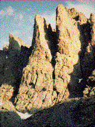

 The Petit Grepon is one of Rocky Mountain National Park's most challenging and awesome climbs. Nestled in the middle of the Cathedral Spires, the summit of the Petit Grepon is a mere ten by thirty foot perch, but "placemat" may be a better term. For those who are more interested in a less intimidating climb, we also offer tours up Sharkstooth, a nearby summit offering excellent views of the Petit Grepon.